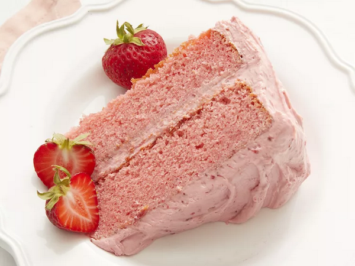

See other recipes
Strawberry Cake

This strawberry cake is easy to make from scratch with strawberry puree and strawberry gelatin. This recipe is worth its weight in gold to me as a caterer. I made this cake for a child's birthday party and it was a major hit! Frost with cream cheese frosting or chocolate ganache for a special treat.
Ingredients
- Sugar
- Butter
- Jell-o
- Eggs
- Flour
- Baking Powder
- Milk
- Strawberries
- Vanilla
Steps
- Preheat the oven to 350 degrees F (175 degrees C). Grease and flour two 9-inch round cake pans.
- Beat sugar, butter, and dry strawberry gelatin together in a large bowl with an electric mixer until light and fluffy. Add eggs one at a time, beating well after each addition.
- Combine flour and baking powder in a large bowl; stir into butter mixture alternately with milk.
- Blend in strawberry puree and vanilla.
- Divide batter evenly between the prepared pans.
- Bake in the preheated oven until a toothpick inserted into the center comes out clean, about 25 to 30 minutes. Cool cakes on a wire rack for 10 minutes; run a table knife around the edges to loosen. Invert carefully onto a serving plate or cooling rack to cool completely.
- Enjoy!